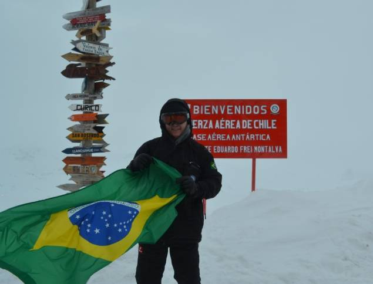

Médico particular percorre Paraisópolis, a maior favela São Paulo Amanda Perobelli/Reuters
Em meio à pandemia e ao enfrentamento ao coronavírus, o que mais se espera é o desenvolvimento rápido de uma vacina,
uma cura definitiva para a doença. Pesquisadores costumam responder que a ciência precisa de tempo para avançar e apresentar resultados.
Em momentos como o atual, fica evidente a importância do investimento na pesquisa, que precisa de um esforço robusto e contínuo. Há seis anos,
não se imaginava que estudos sobre isolamento e confinamento na Antártica, continente de condições extremas de sobrevivência,
seriam úteis à sociedade como um todo, que hoje vive diante da incerteza sobre quarentena.
Desde 2014, uma equipe de pesquisadores do Laboratório Fator Humano, vinculado à Universidade Federal de Santa Catarina,
estuda os efeitos do continente gelado sobre o corpo humano, principalmente na saúde mental.
Desde o agravamento da pandemia no Brasil, o grupo, coordenado pelo psicólogo Roberto Moraes Cruz,
vem adaptando o conhecimento adquirido sobre as reações na Antártica às situações impostas pela quarentena,
como o isolamento social e o confinamento dentro de casa. Contudo, para transformar a teoria em aplicação prática,
faltam recursos. Confira, a seguir, o relato de Cruz sobre como o trabalho
poderia contribuir com os esforços para minimizar os danos causados pela Covid-19.

Qual é o projeto de aplicativo que está pronto para sair do papel?
Foi desenvolvida uma metodologia para os estudos na Antártica e a maquete de um aplicativo de apoio para a pesquisa.
Estamos agora escrevendo o código do app em parceria com especialistas.
Algumas variáveis sobre a saúde mental desenvolvidas para a Antártica são similares à situação da quarentena.
Outras não, como a incidência de luz, que é diferente no continente gelado. Ao mesmo tempo, as pessoas confinadas, ]
principalmente em prédios, estão se expondo menos ao sol, indispensável para a produção de vitamina D pelo organismo.
Como ele vai funcionar? Após a pessoa fazer o download e preencher os dados pessoais,
ela vai receber as notificações para registrar o que está sentindo e pensando. Ao inserir as respostas, como qualidade de sono, sintomas, entre outros elementos,
o aplicativo apresenta os padrões daquele indivíduo, cruzando com dados de outras pessoas para criar mapas de frequência,
prevalência e preditores de sintomas de transtornos ou comprometimentos mentais. Essas informações permitem prevenir afastamentos por problemas de saúde mental e até fatalidades.
Será possível separar o pessoal da linha de frente, do atendimento médico, que precisa de um suporte especializado.
Como ele vai funcionar? Após a pessoa fazer o download e preencher os dados pessoais,
ela vai receber as notificações para registrar o que está sentindo e pensando. Ao inserir as respostas, como qualidade de sono, sintomas, entre outros elementos,
o aplicativo apresenta os padrões daquele indivíduo, cruzando com dados de outras pessoas para criar mapas de frequência,
prevalência e preditores de sintomas de transtornos ou comprometimentos mentais. Essas informações permitem prevenir afastamentos por problemas de saúde mental e até fatalidades.
Será possível separar o pessoal da linha de frente, do atendimento médico, que precisa de um suporte especializado.
Quais são as similaridades com a Antártica que permitiram aproveitar o estudo no momento atual? Isolamento e confinamento.
Há o aumento de estressores como ansiedade, pensamento depressivo e catastrófico, temor pela vida e impulsividade, que é relacionada ao suicídio.
Nas cidades e dentro de casa, é uma oportunidade para testar o aplicativo e ampliar a relevância desse produto.
Quando teremos outra quarentena? É uma chance única de nos prepararmos, além de validar a tecnologia para outros contextos extremos, como em minas de carvão,
plataformas de petróleo e até estações espaciais. Este é um momento para a pesquisa. A última vez que isso aconteceu foi em 1919 e não podemos esperar que aconteça de novo para agir.
Por que é tão difícil conseguir o financiamento? Temos uma cultura de pouco investimento em ciência, tanto em volume, quanto pela alocação dos recursos disponíveis.
Cerca de 98% da produção de conhecimentos científicos é financiada com dinheiro público,
e a pesquisa é predominantemente feita nas universidades. No Brasil, o baixo envolvimento do setor privado é notório, ao contrário de outros países.
Por isso, pesquisadores disputam os editais de financiamento e bolsas. Temos centros e laboratórios de excelência e é difícil de mantê-los sem investimento contínuo.
A crise da pandemia da Covid-19 tem revelado a importância do investimento em ciência e das parcerias público-privadas. Há propostas de fomentos para soluções, como a do aplicativo,
especialmente para a saúde mental, que pode reduzir os impactos de uma pandemia de efeitos psicossociais negativos diante do cenário de calamidade.
Como foram os últimos anos de expedições à Antártica? Durante os últimos sete anos,
fomos o único grupo a fazer pesquisa de base e aplicada sobre fatores psicológicos associados a marcadores biológicos na Antártica. Fomos para lá “de pires na mão”.
Até roupas tivemos que pedir emprestado. É como se recebêssemos uma parte do dinheiro somente para chegar ao Chile, de onde partem os navios e os aviões, mas não à Antártica.
As Forças Armadas têm nos ajudado, pois a Marinha e a FAB participam da logística e reconhecem a relevância do projeto, voltado à saúde dos militares, mas os recursos são escassos.
No ano passado, não participamos de uma etapa da pesquisa por falta de verba. Foi a primeira missão, desde 2014, sem coleta de dados. E sou professor bolsista produtividade pelo CNPq.
O que poderia melhorar? O gerenciamento da pesquisa no Brasil e das fontes de investimento.
Há excesso de hierarquia, burocracia e de atravessamentos políticos. Poderíamos estar em campo coletando dados para o aplicativo.
Demora para que consigamos apresentar resultados consistentes e com volume de respostas rápido à sociedade, pois perdemos tempo ao buscar alternativas para trabalhar.
O ideal seria destinar verbas aos centros e laboratórios de pesquisa, ao invés de depender excessivamente dos editais das agências de fomento.
Como essa mudança auxiliaria na prática? Quem melhor sabe onde empregar o recurso é o pesquisador.
Mudar a engrenagem aumentaria a velocidade de produção e daria maior segurança no trabalho dos pesquisadores.
No nosso caso, nós não conseguimos concluir o nosso aplicativo por falta de recursos, mas continuamos realizando o nosso trabalho, de maneira autônoma e com muito esforço,
com apoio de nossos estudantes e colaboradores, nacionais e internacionais. Há muito investimento pessoal na pesquisa, seja para se deslocar, para pedir ajuda a outros colegas especialistas,
para participar de eventos científicos com os nossos alunos, para produzir artigos e livros,
no Brasil ou em língua estrangeira. Parodiando Euclides da Cunha, o pesquisador brasileiro é, antes de tudo, um forte.